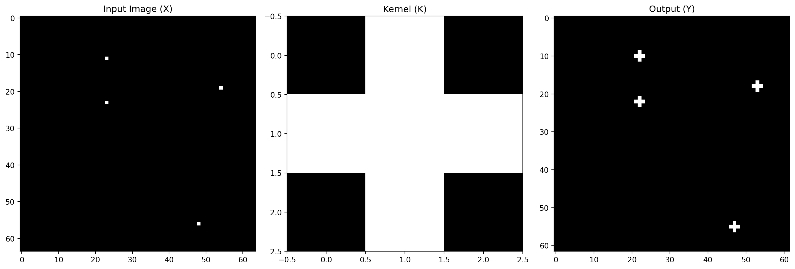

From Fully Connected Layers to Convolutions
Key Points
- MLPs impractical for high-dimensional perceptual data
- One-megapixel image → \(10^9\) parameters with 1000 hidden units
- CNNs exploit rich image structure
Three Key CNN Design Principles
Core Principles
- Translation Invariance: Network responds similarly to patterns regardless of location
- Locality: Early layers focus on local regions
- Hierarchy: Deeper layers capture longer-range features
Invariance in Object Detection
Key Concept
- Recognition should not depend on precise object location
- Illustrated by “Where’s Waldo” game
- Waldo’s appearance independent of location
- Sweep image with detector for likelihood scores

An image of the “Where’s Waldo” game.
CNN Design Desiderata
- Translation Invariance
- Early layers respond similarly to same patch
- Regardless of location in image
- Locality
- Early layers focus on local regions
- Aggregate local representations later
- Hierarchy
- Deeper layers capture longer-range features
- Similar to higher-level vision in nature
Constraining the MLP
Mathematical Formulation
- Input images \(\mathbf{X}\) and hidden representations \(\mathbf{H}\) as matrices
- Fourth-order weight tensors \(\mathsf{W}\)
- With biases \(\mathbf{U}\):
\[\begin{aligned} \left[\mathbf{H}\right]_{i, j} &= [\mathbf{U}]_{i, j} + \sum_k \sum_l[\mathsf{W}]_{i, j, k, l} [\mathbf{X}]_{k, l}\\ &= [\mathbf{U}]_{i, j} + \sum_a \sum_b [\mathsf{V}]_{i, j, a, b} [\mathbf{X}]_{i+a, j+b}.\end{aligned}\]
Translation Invariance
Key Insight
- Shift in input \(\mathbf{X}\) → shift in hidden representation \(\mathbf{H}\)
- \(\mathsf{V}\) and \(\mathbf{U}\) independent of \((i, j)\)
- Simplified definition:
\[[\mathbf{H}]_{i, j} = u + \sum_a\sum_b [\mathbf{V}]_{a, b} [\mathbf{X}]_{i+a, j+b}.\]
- This is a convolution!
Locality
Implementation
- Only look near location \((i, j)\)
- Set \([\mathbf{V}]_{a, b} = 0\) outside range \(|a|> \Delta\) or \(|b| > \Delta\)
- Rewritten as:
\[[\mathbf{H}]_{i, j} = u + \sum_{a = -\Delta}^{\Delta} \sum_{b = -\Delta}^{\Delta} [\mathbf{V}]_{a, b} [\mathbf{X}]_{i+a, j+b}.\]
- Reduces parameters from \(4 \cdot 10^6\) to \(4 \Delta^2\)
Convolutions in Mathematics
Definition
- Convolution between functions \(f, g: \mathbb{R}^d \to \mathbb{R}\):
\[(f * g)(\mathbf{x}) = \int f(\mathbf{z}) g(\mathbf{x}-\mathbf{z}) d\mathbf{z}.\]
- For discrete objects (2D tensors):
\[(f * g)(i, j) = \sum_a\sum_b f(a, b) g(i-a, j-b).\]
Channels in CNNs
Key Concepts
- Images: 3 channels (RGB)
- Third-order tensors: height × width × channel
- Convolutional filter adapts: \([\mathsf{V}]_{a,b,c}\)
- Hidden representations: third-order tensors \(\mathsf{H}\)
- Feature maps: spatialized learned features

Detect Waldo.
Multi-Channel Convolution
Complete Formulation
- Input channels: \(c_i\)
- Output channels: \(c_o\)
- Kernel shape: \(c_o\times c_i\times k_h\times k_w\)
- Complete convolution:
\([\mathsf{H}]_{i,j,d} = \sum_{a = -\Delta}^{\Delta} \sum_{b = -\Delta}^{\Delta} \sum_c [\mathsf{V}]_{a, b, c, d} [\mathsf{X}]_{i+a, j+b, c},\)
where \(d\) indexes output channels
Summary and Discussion
Key Points
- CNNs derived from first principles
- Translation invariance: treat all patches similarly
- Locality: use small neighborhoods
- Channels: restore complexity lost to restrictions
- Hyperspectral images: tens to hundreds of channels :::
Convolutions for Images
The Cross-Correlation Operation
Key Points
- Convolutional layers actually perform cross-correlation
- Input tensor and kernel tensor combined
- Window slides across input tensor
- Elementwise multiplication and summation

Two-dimensional cross-correlation operation
Cross-Correlation Implementation
Cross-Correlation Example
# Create a 256x256 sparse image with a few 1s
X = torch.zeros((64, 64))
X[11, 23] = 1.0
X[23, 23] = 1.0
X[56, 48] = 1.0
X[19, 54] = 1.0
# Create a 3x3 cross-shaped kernel
K = torch.tensor([[0.0, 1.0, 0.0],
[1.0, 1.0, 1.0],
[0.0, 1.0, 0.0]])
# Apply the correlation
Y = corr2d(X, K)
import matplotlib.pyplot as plt
fig, (ax1, ax2, ax3) = plt.subplots(1, 3, figsize=(15, 5))
# Plot input image X
ax1.imshow(X, cmap='gray')
ax1.set_title('Input Image (X)')
ax1.axis('on')
# Plot kernel K
ax2.imshow(K, cmap='gray')
ax2.set_title('Kernel (K)')
ax2.axis('on')
# Plot output Y
ax3.imshow(Y, cmap='gray')
ax3.set_title('Output (Y)')
ax3.axis('on')
plt.tight_layout()
plt.show()
Convolutional Layers
Implementation
- Cross-correlate input and kernel
- Add scalar bias
- Initialize kernels randomly
- Parameters: kernel and scalar bias
Edge Detection Example
Application
- Detect object edges in images
- Find pixel change locations
- Use special kernel for edge detection
tensor([[1., 1., 0., 0., 0., 0., 1., 1.],
[1., 1., 0., 0., 0., 0., 1., 1.],
[1., 1., 0., 0., 0., 0., 1., 1.],
[1., 1., 0., 0., 0., 0., 1., 1.],
[1., 1., 0., 0., 0., 0., 1., 1.],
[1., 1., 0., 0., 0., 0., 1., 1.]])Learning a Kernel
Training Process
- Learn kernel from input-output pairs
- Use squared error loss
- Update kernel via gradient descent
conv2d = nn.LazyConv2d(1, kernel_size=(1, 2), bias=False)
X = X.reshape((1, 1, 6, 8))
Y = Y.reshape((1, 1, 6, 7))
lr = 3e-2
for i in range(10):
Y_hat = conv2d(X)
l = (Y_hat - Y) ** 2
conv2d.zero_grad()
l.sum().backward()
conv2d.weight.data[:] -= lr * conv2d.weight.grad
if (i + 1) % 2 == 0:
print(f'epoch {i + 1}, loss {l.sum():.3f}')epoch 2, loss 11.886
epoch 4, loss 2.108
epoch 6, loss 0.401
epoch 8, loss 0.086
epoch 10, loss 0.022Cross-Correlation vs Convolution
Key Differences
- Strict convolution: flip kernel horizontally and vertically
- Cross-correlation: use original kernel
- Outputs remain same due to learned kernels
- Term “convolution” used for both operations
Feature Maps and Receptive Fields
Concepts
- Feature map: learned spatial representations
- Receptive field: elements affecting calculation
- Can be larger than input size
- Deeper networks for larger receptive fields
Figure from Field (1987): Coding with six different channels
Summary
Key Points
- Core computation: cross-correlation
- Multiple channels: matrix-matrix operations
- Highly local computation
- Hardware optimization opportunities
- Learnable filters replace feature engineering
Exercises
Practice Problems
- Diagonal edges and kernel effects
- Manual kernel design
- Gradient computation errors
- Cross-correlation as matrix multiplication
- Fast convolution algorithms
- Block-diagonal matrix multiplication
Padding and Stride
Motivation
- Control output size
- Prevent information loss
- Handle large kernels
- Reduce spatial resolution
Padding
Key Concepts
- Add extra pixels around boundary
- Typically zero padding
- Preserve spatial dimensions
- Common with odd kernel sizes

Pixel utilization for different convolution sizes
Padding Implementation
Stride
Key Points
- Move window more than one element
- Skip intermediate locations
- Useful for large kernels
- Control output resolution
Cross-correlation with strides of 3 and 2
Stride Implementation
Summary and Discussion
Key Points
- Padding: control output dimensions
- Stride: reduce resolution
- Zero padding: computational benefits
- Position information encoding
- Alternative padding methods
Multiple Input and Output Channels
Key Concepts
- RGB images: 3 channels
- Input shape: \(3\times h\times w\)
- Channel dimension: size 3
- Multiple input/output channels
Multiple Input Channels
Implementation
- Kernel matches input channels
- Shape: \(c_i\times k_h\times k_w\)
- Cross-correlation per channel
- Sum results
def corr2d_multi_in(X, K):
return sum(d2l.corr2d(x, k) for x, k in zip(X, K))
X = d2l.tensor([[[0.0, 1.0, 2.0], [3.0, 4.0, 5.0], [6.0, 7.0, 8.0]],
[[1.0, 2.0, 3.0], [4.0, 5.0, 6.0], [7.0, 8.0, 9.0]]])
K = d2l.tensor([[[0.0, 1.0], [2.0, 3.0]], [[1.0, 2.0], [3.0, 4.0]]])
corr2d_multi_in(X, K)tensor([[ 56., 72.],
[104., 120.]])Multiple Output Channels
Implementation
- Kernel tensor for each output channel
- Shape: \(c_o\times c_i\times k_h\times k_w\)
- Concatenate on output channel dimension
\(1\times 1\) Convolutional Layer
Key Points
- No spatial correlation
- Channel dimension computation
- Linear combination at each position
- Fully connected layer per pixel
\(1\times 1\) convolution with 3 input and 2 output channels
\(1\times 1\) Convolution Implementation
def corr2d_multi_in_out_1x1(X, K):
c_i, h, w = X.shape
c_o = K.shape[0]
X = d2l.reshape(X, (c_i, h * w))
K = d2l.reshape(K, (c_o, c_i))
Y = d2l.matmul(K, X)
return d2l.reshape(Y, (c_o, h, w))
X = d2l.normal(0, 1, (3, 3, 3))
K = d2l.normal(0, 1, (2, 3, 1, 1))
Y1 = corr2d_multi_in_out_1x1(X, K)
Y2 = corr2d_multi_in_out(X, K)
# assert float(d2l.reduce_sum(d2l.abs(Y1 - Y2))) < 1e-6Discussion
Key Points
- Channels combine MLP and CNN benefits
- Trade-off: parameter reduction vs. model expressiveness
- Computational cost: \(\mathcal{O}(h \cdot w \cdot k^2 \cdot c_i \cdot c_o)\)
- Example: 256×256 image, 5×5 kernel, 128 channels → 53B operations
Pooling
Motivation
- Global questions about images
- Gradual information aggregation
- Translation invariance
- Spatial downsampling
Maximum and Average Pooling
Key Concepts
- Fixed-shape window
- No parameters
- Deterministic operations
- Maximum or average value

Max-pooling with \(2\times 2\) window
Pooling Implementation
def pool2d(X, pool_size, mode='max'):
p_h, p_w = pool_size
Y = d2l.zeros((X.shape[0] - p_h + 1, X.shape[1] - p_w + 1))
for i in range(Y.shape[0]):
for j in range(Y.shape[1]):
if mode == 'max':
Y[i, j] = X[i: i + p_h, j: j + p_w].max()
elif mode == 'avg':
Y[i, j] = X[i: i + p_h, j: j + p_w].mean()
return Y
X = d2l.tensor([[0.0, 1.0, 2.0], [3.0, 4.0, 5.0], [6.0, 7.0, 8.0]])
pool2d(X, (2, 2))
pool2d(X, (2, 2), 'avg')tensor([[2., 3.],
[5., 6.]])Padding and Stride in Pooling
Implementation
- Adjust output shape
- Default: matching window and stride
- Manual specification possible
- Rectangular windows supported
Multiple Channels in Pooling
Key Points
- Pool each channel separately
- Maintain channel count
- Independent operations
Summary
Key Points
- Simple aggregation operation
- Standard convolution semantics
- Channel independence
- Max-pooling preferred
- \(2 \times 2\) window common
- Alternative pooling methods
Summary
Key Points
- Evolution from MLPs to CNNs
- LeNet-5 remains relevant
- Similar to modern architectures
- Implementation ease
- Democratized deep learning